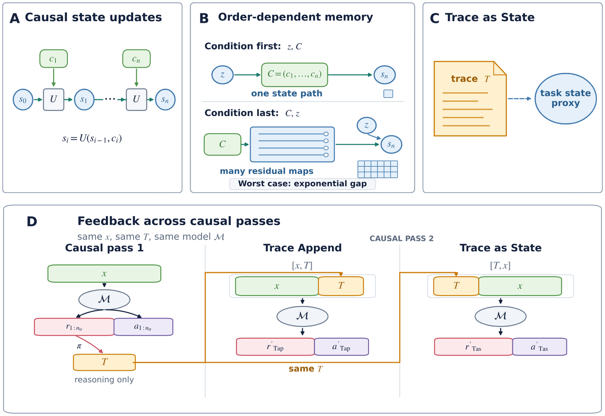
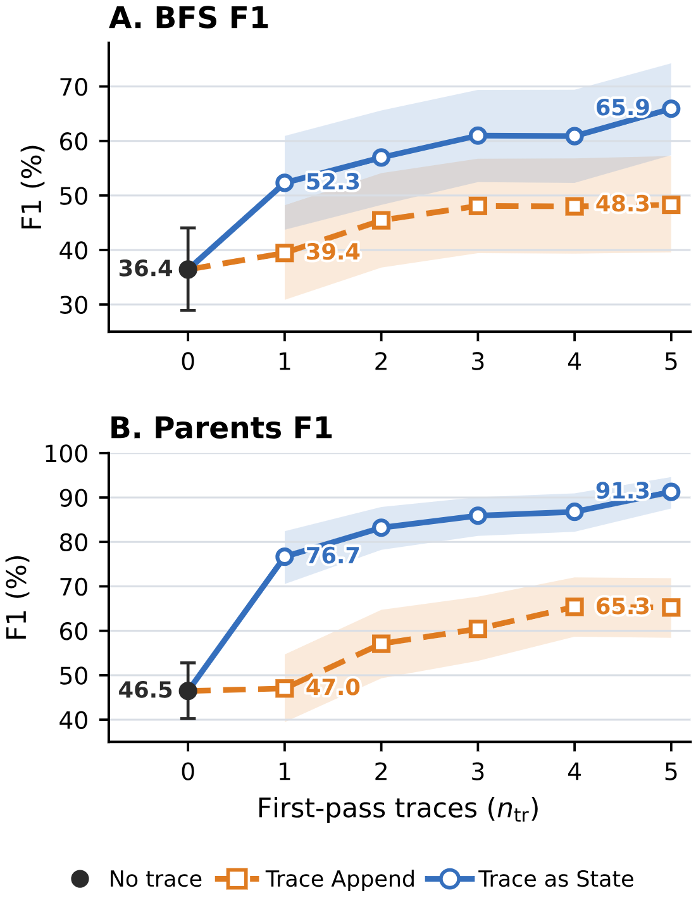
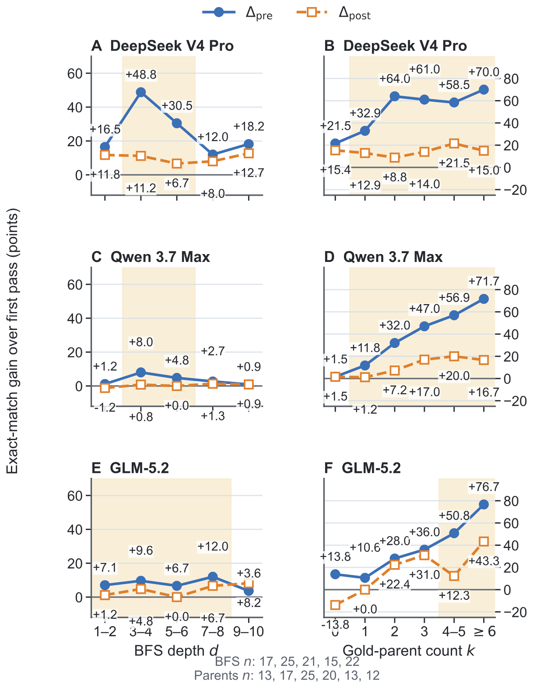
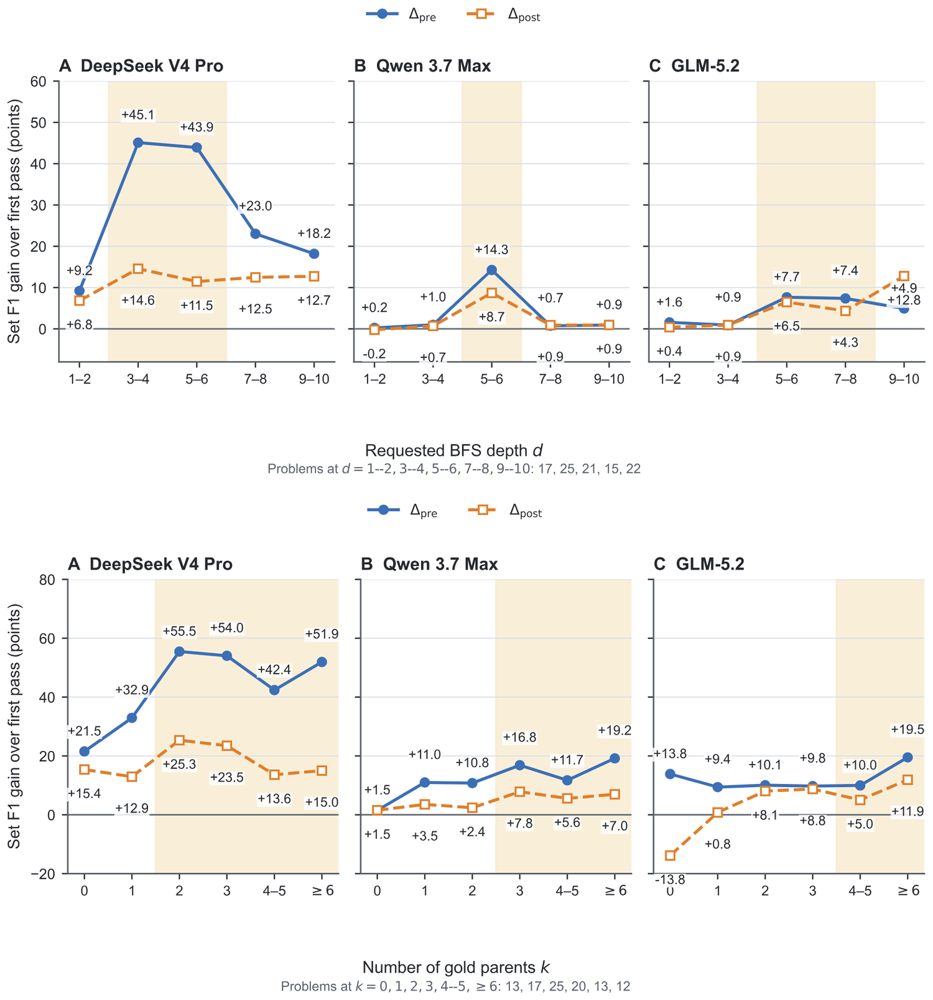
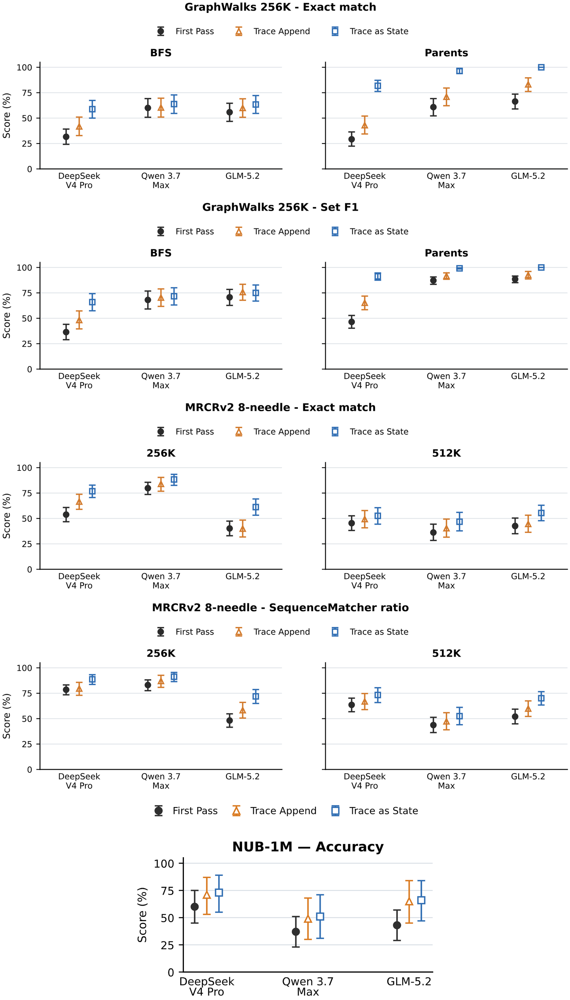
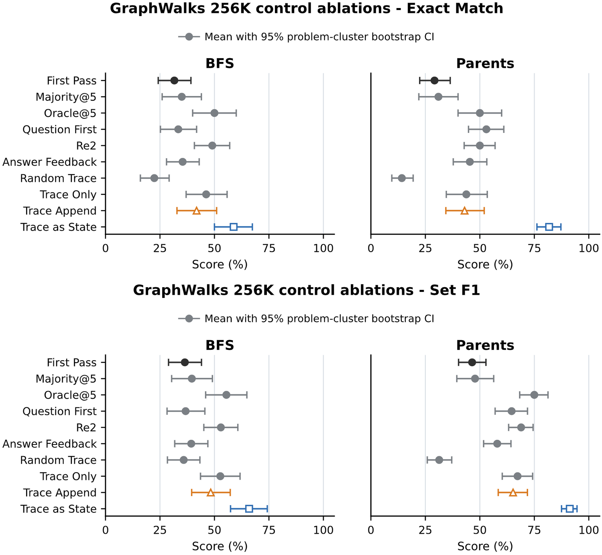

图 1: trace as state 总览。(A) 因果处理器维护一个运行状态。(B) 在最坏情况的条件状态更新任务中，条件在前处理只需跟踪已实现的状态，条件在后处理可能需要指数级更多的工作记忆。(C) 推理轨迹 T 提供任务状态的文本代理。(D) trace as state 在全新的一次因果传递中把 T 放在上下文之前。
英文原注Figure 1: Overview for trace as state (A) A causal processor carries one running state. (B) In a worst-case conditional state update task, condition-first processing tracks only the realized state, whereas condition-last processing can require exponentially more working memory. (C) Reasoning trace [T] provides a textual proxy for task state. (D) trace as state places [T] before the context in a fresh causal pass.

图 2: DeepSeek V4 Pro 在 GraphWalks 256K 上的轨迹数量消融。面板 A 报告 BFS F1，面板 B 报告 Parents F1。阴影为 95% 百分位置信区间。
英文原注Figure 2: Trace-count ablation on DeepSeek V4 Pro GraphWalks 256K. Panel A reports BFS F1 and Panel B reports Parents F1. Shading shows 95% percentile confidence intervals.

图 3: GraphWalks 相对第一遍的精确匹配增益，按 BFS 深度 d（左）与金标准前驱数量 k（右）分层。蓝色与橙色曲线分别报告条件在前与条件在后的增益。各面板下方给出桶的支持度。黄色阴影标出由结果驱动的描述性区间，其边界对每个模型与子任务单独划分。
英文原注Figure 3: GraphWalks exact-match gains over the first pass by BFS depth [d] (left) and gold-parent count [k] (right). The blue and orange curves report [\Delta_{\mathrm{pre}}] and [\Delta_{\mathrm{post}}] . Bin supports appear below the panels. Yellow shading marks descriptive, outcome-informed ranges of larger separation, with boundaries chosen separately for each model and subtask.

图 4: 同样按 BFS（上）与 Parents（下）分层的集合 F1 增益。集合 F1 衡量预测节点集与金标准节点集的部分重叠。黄色阴影同样标出对每个模型、子任务与指标单独选取的、由结果驱动的描述性区间。
英文原注Figure 4: Set F1 gains for the same BFS (top) and Parents (bottom) stratifications. Set F1 records partial overlap between predicted and gold node sets. Yellow shading again marks descriptive, outcome-informed ranges selected separately for each model, subtask, and metric.

图 5: 严格同 T 对比的不确定性。上面两行给出 GraphWalks 256K 的精确匹配与集合 F1，按 BFS 与 Parents 分列；下面两行较宽的是 MRCRv2 8-needle 的精确匹配与 SequenceMatcher 比值，按 256K 与 512K 分档。最后一个面板给出 NUB-1M 的准确率。点为均值，误差条为在每道题内对 5 次重复取平均后的 95% 百分位区间。
英文原注Figure 5: Uncertainty for the strict same- [T] comparisons. The top two rows show GraphWalks 256K exact match and set F1, split into BFS and Parents; the bottom two wide rows show MRCRv2 8-needle exact match and SequenceMatcher ratio, split into 256K and 512K bins. The final panel shows NUB-1M accuracy. Points are means; bars are 95% percentile intervals after averaging 5 repeats within each problem.

图 6: DeepSeek V4 Pro 在 GraphWalks 256K 上对照实验的不确定性，包含精确匹配与集合 F1。点为均值，误差条来自 20000 次按题聚类的自助重采样，随机种子为 0。Majority@5 保留至少在三次重复级预测集合里出现过的答案元素，Oracle@5 给出 5 个输出里事后最高的评测分数。其他条件在每道题内对 5 次计划重复取平均，缺失或无效输出记零分。
英文原注Figure 6: Uncertainty for DeepSeek V4 Pro GraphWalks 256K control comparisons in exact match and set F1. Points are means; bars are 95% percentile intervals from 20,000 problem-cluster bootstrap resamples (seed 0). Majority@5 retains answer elements occurring in at least three repeat-level prediction sets, and Oracle@5 reports the retrospective maximum evaluator score among the five outputs. Other conditions average five planned repeats within each problem and assign zero to missing or invalid outputs.